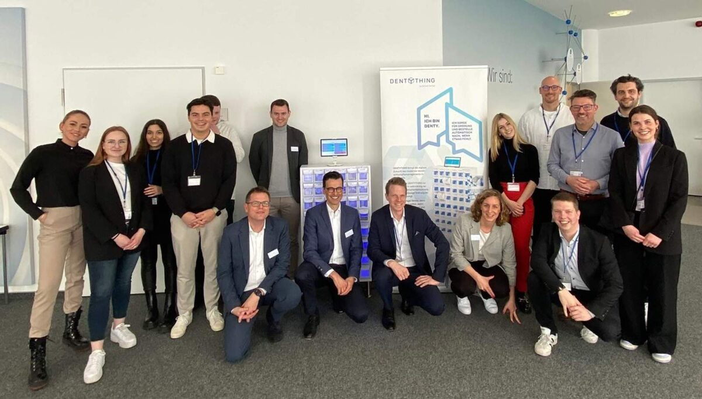

Förderung digitaler Kompetenzen: Brasseler richtet PopUp-Campus der Digital Business University aus
Veröffentlicht am 06.04.2023
Lemgo, 06.04.2023
In Kooperation mit der DBU Digital Business University of Applied Sciences bieten wir bei Gebr. Brasseler die Möglichkeit, sich zu Digitalexperten fortzubilden. Unser Förderprogramm unterstützt ausgewählte Mitarbeitende dabei, berufsbegleitend zu studieren – virtuell und in Präsenzveranstaltungen. Vom 30. März bis 01. April waren wir Gastgeber des DBU PopUp-Campus zum Thema „Führung im digitalen Zeitalter“ und konnten in unserem Firmensitz in Lemgo Studierende und Unternehmen aus ganz OWL begrüßen. Der PopUp-Campus ist Teil der Präsenzveranstaltungen der berufsbegleitenden, semi-virtuellen Studiengänge, die wir im Rahmen unserer Personalentwicklung anbieten.
Weiterbildung von Nachwuchskräften in Digitalisierung
Die DBU hat gemeinsam mit Brasseler und weiteren Unternehmen aus dem Kreis Ostwestfalen-Lippe ein Studienkonzept speziell für OWL adaptiert. Ziel ist es, Mitarbeitende in denjenigen Bereichen weiterzubilden, die besonders zukunftsträchtig sind, unter anderem in Digital Business Management, Data Science und Business Analytics. Die Bachelor- und Masterstudiengänge sind hybrid konzipiert: virtuelle Lehrveranstaltungen werden durch monatliche Präsenzveranstaltungen an der Hochschule in Berlin ergänzt. Zweimal jährlich findet darüber hinaus in einem der Partnerunternehmen in OWL ein sogenannter PopUp-Campus statt, bei dem alle Studierenden Einblicke in das jeweilige Unternehmen erhalten, Erfahrungen austauschen und über aktuelle Themen diskutieren können. Dieses Rahmenprogramm wird von PwC und dem Pioneers Club unterstützt.
Seit Oktober 2021 absolvieren zwei unserer Mitarbeitenden berufsbegleitend die Bachelorstudiengänge „Digital Business Management“ und „Digital Marketing & Communication Management“, nunmehr im vierten Semester. „Digitale Kompetenzen sind ausschlaggebend für eine erfolgreiche digitale Transformation“, sagt Björn Hartmann, Personalleiter. „Im Rahmen unseres Weiterbildungsprogramms bilden wir Nachwuchskräfte in Bereichen aus, die einerseits ihre Interessen decken, andererseits zur Wertschöpfung von Brasseler beitragen. Die flexible, semi-virtuelle Lernumgebung der Studiengänge bietet den optimalen Rahmen für eine berufsbegleitende Fortbildung.“
PopUp-Campus bei Brasseler: „Führung im digitalen Zeitalter“
Am 30. März begrüßte Stephan Köhler, Sprecher der Geschäftsführung, die rund 30 Gäste auf dem PopUp Campus bei Brasseler. Teilnehmende waren Studierende und Vertreter der Unternehmen GERRY WEBER International AG, Schüttflix, comspace, Volksbank Bielefeld-Gütersloh, KRONE Agriculture und die BAG Bankaktiengesellschaft sowie Managing Director der DBU und PwC, Sebastian Holtze. Bei einer Betriebsführung durch unser Unternehmen lernten die Gäste unter anderem Dentything kennen, das intelligente Warenwirtschaftssystem für Zahnärzte, eines der neusten Produkte unserer Marke Komet. In einem VR-Spiel konnten die Teilnehmende zudem virtuell die Rolle eines Zahnarztes annehmen und eine Zahnbehandlung am Patienten durchführen.
Personalleiter Björn Hartmann gab in seinem Vortrag „Führungskultur bei Brasseler“ interessante Einblicke in unsere moderne Führungskultur. Andreas Kämmer, geschäftsführender Gesellschafter der comspace GmbH & KG, ergänzte das Thema durch Impulse zu Agiler Führung sowie New Work des Bielefelder IT-Unternehmens. Beide Einblicke verdeutlichten, wie Leadership im digitalen Zeitalter funktioniert und wieviel Arbeit in der Transformation von Unternehmen und Unternehmenskultur steckt. Beim abschließenden Networking tauschten die Teilnehmenden in lockerer Atmosphäre ihre Erfahrungen und Perspektiven aus verschiedenen Branchen und Unternehmen aus OWL aus.
„OWL ist immer eine Reise wert. Umso mehr, wenn innovative Bildungskonzepte auf Familien-unternehmen und Mittelstand treffen“, sagt Sebastian Holtze. „Vielen Dank an Brasseler, dass wir eure Gäste sein durften. Der Rundgang durch die Produktion, Impulse zum Thema Leadership im digitalen Zeitalter und das Networking – es war kurzweilig und inspirierend!“
Das OWL-Netzwerk ist ein zukunftsorientiertes Projekt, das die Zusammenarbeit zwischen Unternehmen und Studierenden fördert und somit die Verbindung zwischen Theorie und Praxis in relevanten Kompetenzen stärkt – bei Brasseler ein wichtiger Baustein der Nachwuchsförderung.

Pressekontakt
Laura Fuchs
Unternehmenskommunikation
Telefon +49 (0) 151 54087468
presse@brasseler.de